Компьютерное зрение: от пикселя до светодиода
Учебник после вводного видео с установкой Python, Anaconda, VS Code, OpenCV и pyserial. Формат: две пары по 90 минут + консультации. Если пара у вас короче, переносите задания со звёздочкой на консультацию. Все примеры лежат рядом с учебником и работают локально.
Начните с index.html в браузере или читайте главы в предпросмотре Markdown в VS Code (Ctrl+Shift+V, на macOS Cmd+Shift+V). Каждый шаг: прочитать → набрать небольшой фрагмент → запустить → изменить один параметр → объяснить результат. Готовый скрипт используйте для сверки, а не вместо самостоятельного набора.
Маршрут
- Как начать писать и запускать код.
- Изображение как матрица: пиксели, цвета, маски, объекты.
- Камера и ArUco.
- Компьютер → RP2040: управление светодиодами.
- План преподавателя и контрольные задания.
Что получится
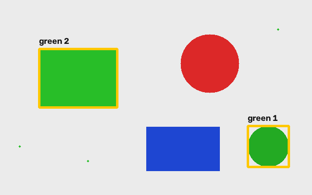
Вы сможете вырезать участок изображения, менять пиксели, выделять цвет маской и обводить объекты; показывать видеопоток и подписанные ArUco-маркеры; отправлять с компьютера команды r, g, b на плату.
Файлы
examples/— семь самостоятельных программ Python.assets/— учебная сцена, иллюстрации, маркер для показа камере, схема подключения.arduino/rgb_serial/rgb_serial.ino— прошивка Arduino для RP2040.chapters/— исходный текст учебника с фрагментами кода.CHECKS.md— что проверено программно и что требует оборудования.
Примеры используют обычные строки с путями. Все программы запускайте из папки CV_course: например, python textbook/examples/01_pixels.py. Папка textbook/assets/generated уже входит в комплект. Исходные test.py и civic.jpeg лежат в CV_course.
Учебные Python-программы выполняются сверху вниз. Своих функций, обработки параметров командной строки и блока if __name__ == "__main__" в них нет. Все настройки меняем прямо в строках кода. Служебная папка tools нужна только преподавателю для сборки сайта.
0. От открытого изображения к своей программе
Вы уже запустили cv.imread() и увидели картинку. Теперь будем менять её содержимое. Не нужно переустанавливать весь стек: сначала убедитесь, что VS Code запускает тот Python, в котором установлены библиотеки.
0.1. Рабочее место
- Откройте в VS Code папку
CV_courseчерез File → Open Folder. - Вызовите палитру команд (
Ctrl+Shift+P, macOSCmd+Shift+P), выберите Python: Select Interpreter, затем своё окружение Anaconda с OpenCV. На компьютере автора найдено окружениеopencv; у вас имя может отличаться. - Откройте Terminal → New Terminal. Если меняли интерпретатор, создайте новый терминал.
- Перейдите в папку курса: на macOS/Linux
cd ~/CV_course; на Windows —cdи ваш путь к папке. Активируйте своё окружение, напримерconda activate opencv. - Выполните проверку:
python -c "import sys, cv2, numpy, serial; print(sys.executable); print(cv2.__version__); print(hasattr(cv2, 'aruco'))"
Нужны путь к выбранному Python, версия OpenCV и True. Если импорт не работает, сравните интерпретатор VS Code с sys.executable. Устанавливайте зависимости именно через python -m pip в выбранном окружении. Пакет называется pyserial, импортируется как serial.
Не ставьте несколько пакетов OpenCV одновременно: они предоставляют один модуль cv2. Если нынешняя установка уже работает и содержит aruco, оставьте её. Для отдельного нового учебного окружения можно использовать:
conda create -n cv_course python=3.12 -y
conda activate cv_course
python -m pip install opencv-contrib-python numpy pyserial
После этого выберите cv_course в VS Code. Для окон нужен обычный пакет OpenCV, а не вариант headless. Если conda не находится на Windows, откройте Anaconda Prompt. Подробности ArUco разобраны в главе 2.
0.2. Первый собственный файл
Создайте my_first.py прямо в CV_course, рядом с изображением civic.jpeg. Наберите:
import cv2 as cv
img = cv.imread("civic.jpeg")
if img is None:
raise FileNotFoundError("Не найден civic.jpeg. Запускайте программу из папки CV_course.")
print("Размер и каналы:", img.shape)
print("Тип значений:", img.dtype)
cv.imshow("My image", img)
cv.waitKey(0)
cv.destroyAllWindows()
Запуск в терминале из папки курса:
python my_first.py
import подключает библиотеку; as cv даёт ей короткое имя. img — переменная с массивом изображения. print выводит текст в терминал, imshow открывает отдельное окно. waitKey(0) ждёт клавишу в окне изображения. После неё программа закрывает окна. Путь "civic.jpeg" — обычная строка. Python ищет файл в текущей папке терминала: в этом курсе это CV_course.
Запускайте весь .py через терминал или Run Python File in Terminal. Кнопка расширения Code Runner может использовать другой Python; не смешивайте способы запуска, пока не убедились, что окружения совпадают. Для программ с input() нужен терминал, а не панель Output.
0.3. Минимум Python для следующих шагов
height, width = img.shape[:2] # распаковали два числа
x, y = 20, 10
pixel = img[y, x] # взяли значение
print(pixel)
for y in range(3): # y = 0, 1, 2
print("Строка", y) # отступ — тело цикла
if width > 100:
print("Изображение шире 100 пикселей")
Индексы начинаются с нуля. В range(3) верхняя граница не включается. Отступы в Python определяют, какие строки входят в цикл или условие; используйте четыре пробела. = присваивает значение, == сравнивает. Комментарий после # объясняет код и не выполняется.
Теперь измените только заголовок окна, запустите снова и убедитесь, что выполняется сохранённый файл. Затем переходите к матрицам.
Как работать с ошибкой
Сначала прочитайте последнюю строку traceback, затем найдите указанный номер строки в своём .py. ModuleNotFoundError обычно означает неверное окружение или отсутствующий пакет; FileNotFoundError — путь; IndexError — выход за размер матрицы; IndentationError — отступы. Если программа ждёт клавишу, переключитесь в окно OpenCV. Остановить скрипт в терминале можно Ctrl+C.
Одна папка для всех запусков
Все команды учебника выполняйте из папки CV_course, не из textbook или examples. В VS Code откройте именно CV_course и новый терминал. На macOS/Linux выполните cd ~/CV_course; на Windows — cd C:/ваш/путь/CV_course. Проверьте командой pwd (PowerShell тоже поддерживает её), что вы в нужной папке.
Путь записываем прямо в строке:
img = cv.imread("textbook/assets/scene.png")
Можно указать полный путь к своему файлу, например cv.imread("C:/Users/Student/Pictures/photo.jpg") или cv.imread("/Users/student/Pictures/photo.jpg"). Замените пример своим путём. На Windows удобно использовать /, чтобы не экранировать обратные слеши. При ошибке проверьте имя, расширение и расположение файла.
Первая пара. От изображения к найденному объекту
За 90 минут пройдем цепочку: массив чисел → изменение пикселей → HSV → маска → контуры → рамки и подписи. Сначала работаем с подготовленной картинкой, чтобы у всех получился одинаковый результат. Затем переносим приемы на свои фотографии.
| Время | Что делаем | Что должно получиться |
|---|---|---|
| 0–10 мин | Создаем файл, читаем изображение, проверяем путь | Окно с картинкой |
| 10–30 мин | Размер, пиксель, обрезка, цикл | Фрагмент и красноватая картинка |
| 30–45 мин | GRAY и HSV | Серое изображение, значения HSV |
| 45–60 мин | Цветовая маска | Белые зеленые фигуры на черном фоне |
| 60–80 мин | Контуры, площадь, рамки, надписи | Две рамки с подписями |
| 80–90 мин | Самостоятельное изменение | Поиск синего или красного объекта |
1. Создаем свой первый рабочий файл
Открой в VS Code папку CV_course. Внутри textbook/examples создай my_image.py. Открой встроенный терминал Terminal → New Terminal. Выбери тот же Python-интерпретатор, в котором на вводном уроке работал import cv2: команда Python: Select Interpreter в палитре команд VS Code. Если терминал уже был открыт до смены интерпретатора, открой новый и активируй нужное conda-окружение.
Вставь код ниже и сохрани файл. Для запуска из папки курса набери python textbook/examples/my_image.py. Терминал должен находиться в CV_course; это видно в приглашении или по команде pwd (PowerShell: Get-Location). Путь к картинке отсчитывается от папки терминала: запускайте из CV_course.
import cv2 as cv
img = cv.imread('textbook/assets/scene.png')
if img is None:
raise FileNotFoundError('Не удалось прочитать assets/scene.png')
cv.imshow('image', img)
cv.waitKey(0)
cv.destroyAllWindows()
import подключает библиотеку, as cv задает короткое имя. Переменная img хранит изображение. Строка "textbook/assets/scene.png" — путь к картинке от папки CV_course. waitKey(0) ждет нажатия клавиши в окне OpenCV. Чтобы закрыть пример, щелкни по окну и нажми любую клавишу.
Следующие фрагменты добавляй перед imshow, а в imshow передавай нужную переменную. Готовые версии уже лежат в examples/01_pixels.py, 02_colors.py, 03_objects.py. В них несколько окон; каждое показывает свой этап.
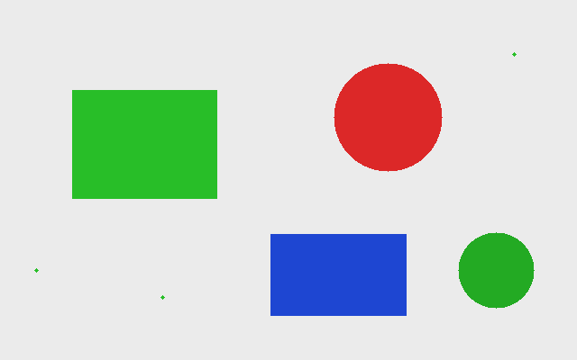
Проверка: исходная сцена размером 640×400 пикселей. Зеленых крупных фигур две; маленькие точки специально понадобятся для фильтрации помех.
2. Изображение — массив
print(img.shape) # (400, 640, 3)
print(img.dtype) # uint8
height, width = img.shape[:2]
print(height, width)
shape сообщает высоту, ширину и число каналов, именно в этом порядке. uint8 хранит целое число от 0 до 255. Один цветной пиксель содержит три числа. OpenCV обычно читает цветное изображение в порядке B, G, R: синий, зеленый, красный. Черный — (0, 0, 0), белый — (255, 255, 255), чистый красный — (0, 0, 255).
В массиве сначала указывают строку y, затем столбец x. Начало координат находится в левом верхнем углу; x растет вправо, y вниз. Индексация начинается с нуля: последний допустимый x здесь равен 639, y — 399.
print(img[120, 100]) # Пиксель x=100, y=120: [40 190 40].
print(img[120, 100, 1]) # Только зеленый канал: 190.
changed = img.copy()
changed[120, 100] = (255, 255, 255)
changed[115:126, 95:106] = (255, 255, 255) # Уже заметный квадрат.
copy() создает независимое изображение. Простое changed = img даст другое имя тому же массиву: изменение одного изменит другое.
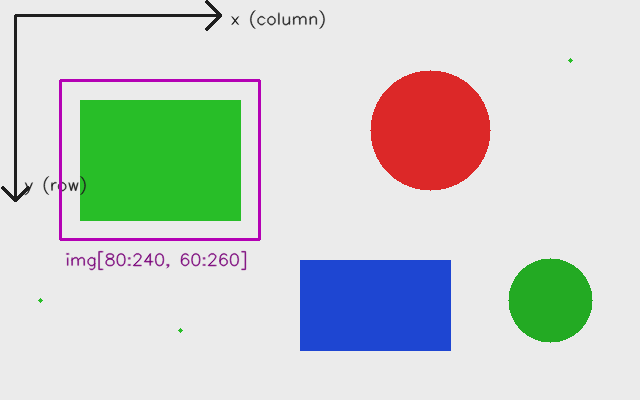
Попробуй: закрась квадрат 30×30 в синий. Проверь, что изменилось бы при перестановке x и y.
3. Обрезка: выбираем область интереса
crop = img[80:240, 60:260].copy()
print(crop.shape) # (160, 200, 3)
cv.imshow('crop', crop)
Запись [y1:y2, x1:x2] берет строки от y1 до y2 − 1 и столбцы от x1 до x2 − 1. Правая граница не включается. Поэтому высота равна 240 − 80, ширина — 260 − 60. Такой фрагмент часто называют ROI, областью интереса. Без .copy() срез обычно связан с исходным массивом: закрашивая его, ты изменишь и оригинал.
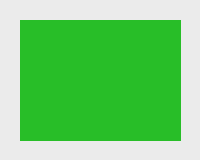
Попробуй: вырежи красный круг целиком. Ожидаемый размер фрагмента сначала посчитай на бумаге, затем проверь через shape. Если окно не открывается, проверь, не получился ли пустой срез из-за перепутанных границ.
4. Проходим по всем пикселям и добавляем красный
tinted = img.copy()
for y in range(height):
for x in range(width):
b, g, r = img[y, x]
tinted[y, x] = (int(b), int(g), min(255, int(r) + 60))
range(height) перебирает номера строк; для каждой строки внутренний цикл перебирает все столбцы. Отступы задают вложенность: последняя строка выполняется для каждого пикселя. Мы сохраняем B и G, а R увеличиваем на 60. int(r) сначала переводит значение в обычное целое Python; min(255, ...) ограничивает результат. Например, из R=220 получается 255, а не число за пределами uint8.
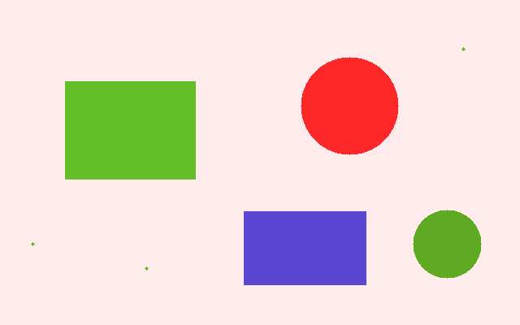
Дополнительно: ускоряем обработку
Этот фрагмент можно оставить на консультацию; в основном скрипте используется понятный цикл. Для больших изображений применяют операцию над целым каналом NumPy:
import numpy as np
fast = img.copy()
red = img[:, :, 2].astype(np.int16)
fast[:, :, 2] = np.clip(red + 60, 0, 255).astype(np.uint8)
print(np.array_equal(tinted, fast)) # True
Двоеточие означает «все строки» или «все столбцы». Временный int16 позволяет безопасно получить числа больше 255. clip ограничивает диапазон, затем мы возвращаем тип uint8. Выражение img[:, :, 2] + 60 прямо в uint8 может переполниться: арифметика массива не обязана насыщаться на 255.
Попробуй: добавь синий оттенок, затем полностью обнули красный канал. Объясни разницу между «увеличить R» и «заменить каждый пиксель красным».
5. Меняем цветовое пространство
gray = cv.cvtColor(img, cv.COLOR_BGR2GRAY)
hsv = cv.cvtColor(img, cv.COLOR_BGR2HSV)
print(gray.shape) # (400, 640)
print(hsv[120, 100]) # [60 201 190]
GRAY хранит по одному значению яркости на пиксель. Цвет теряется, размер изображения в пикселях сохраняется. Это результат преобразования с весами для каналов, а не выбор одного из B, G или R.
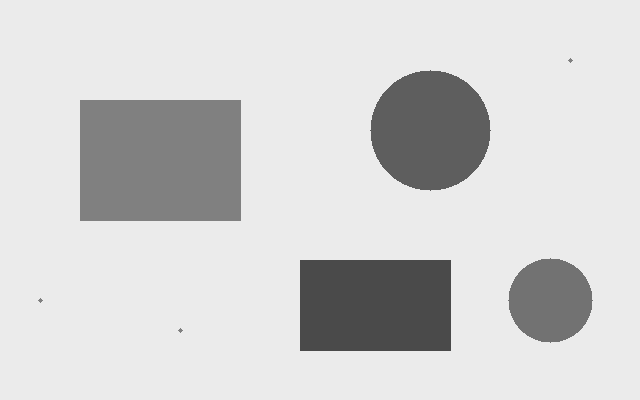
HSV разделяет H — оттенок, S — насыщенность, V — значение яркости. Для обычного 8-битного COLOR_BGR2HSV в OpenCV H лежит в диапазоне 0–179, S и V — 0–255. Примерные оттенки: красный около 0 и 179, зеленый около 60, синий около 120. У серого насыщенность мала; его H не помогает определить цвет.
Не показывай hsv через обычный imshow как цветную картинку: окно интерпретирует три канала как BGR, и цвета будут неверными. Можно показать отдельные каналы как серые изображения:
h, s, v = cv.split(hsv)
cv.imshow('H channel', h)
Попробуй: сравни BGR и HSV пикселей из зеленой фигуры и серого фона. Что лучше отделяет их друг от друга?
6. Маска: задаем условие для каждого пикселя
mask = cv.inRange(hsv, (40, 80, 60), (85, 255, 255))
selected = cv.bitwise_and(img, img, mask=mask)
inRange проверяет сразу три компоненты HSV. Пиксель попадает в маску, если 40 ≤ H ≤ 85, 80 ≤ S ≤ 255 и 60 ≤ V ≤ 255. Нижняя и верхняя границы включены. Маска — одноканальный массив: 255 означает «выбран», 0 — «не выбран». Порог S убирает серый фон, порог V — слишком темные области.
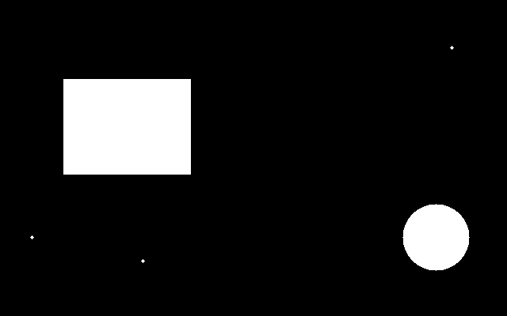
В bitwise_and исходное изображение подано дважды, поэтому цвет остается прежним в выбранных местах; остальные становятся черными.
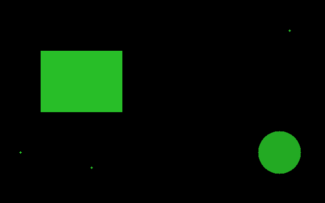
Если нужно именно наложить цветную маску поверх исходника, сделай полупрозрачную подсветку:
overlay = img.copy()
overlay[mask > 0] = (0, 255, 255) # Желтая подсветка выбранного.
overlay = cv.addWeighted(img, 0.6, overlay, 0.4, 0)
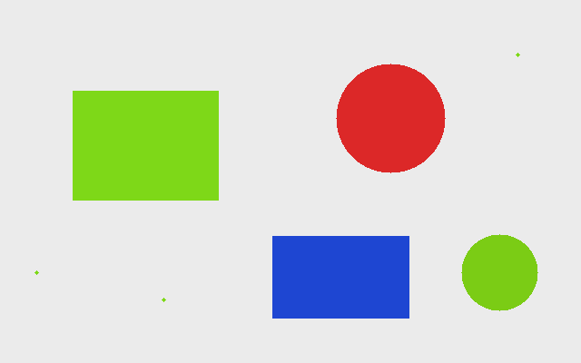
Порог — гипотеза о цвете, а не универсальный детектор. На фотографии он зависит от освещения, теней и камеры. Для красного часто нужны два интервала по H: например, 0–10 и 170–179, затем объединение двух масок через cv.bitwise_or(mask1, mask2).
Попробуй: поставь для синего H от 100 до 130 при тех же ограничениях S и V. Должен остаться один синий прямоугольник.
7. Из маски получаем контуры
contours, hierarchy = cv.findContours(
mask, cv.RETR_EXTERNAL, cv.CHAIN_APPROX_SIMPLE
)
result = img.copy()
count = 0
for contour in contours:
area = cv.contourArea(contour)
if area < 500:
continue
count += 1
x, y, w, h = cv.boundingRect(contour)
cv.rectangle(result, (x, y), (x + w - 1, y + h - 1), (0, 200, 255), 3)
cv.putText(result, 'green ' + str(count), (x, y - 10),
cv.FONT_HERSHEY_SIMPLEX, 0.6, (20, 20, 20), 2, cv.LINE_AA)
Контур описывает границу белой области. RETR_EXTERNAL берет только внешние границы, CHAIN_APPROX_SIMPLE сокращает лишние точки на прямых участках. На вход передаем бинарную маску, не цветное изображение. hierarchy содержит отношения контуров; в этой задаче она не нужна.
contourArea вычисляет геометрическую площадь контура в квадратных пикселях: это не обязательно точное число белых пикселей. continue пропускает мелкие точки. Порог 500 подобран для учебной картинки и при другом масштабе может потребовать изменения.
boundingRect возвращает левый верхний угол (x, y) и размеры (w, h). В функции рисования точки задаются в порядке (x, y), тогда как доступ к массиву был [y, x]. Конечная точка рамки — (x + w - 1, y + h - 1), чтобы соответствовать пикселям области.
putText рисует строку на изображении. Точка задает начало строки на ее базовой линии. 0.6 — масштаб шрифта, 2 — толщина, LINE_AA сглаживает края. Стандартный шрифт OpenCV плохо подходит для кириллицы, поэтому здесь подписи латиницей. Функции рисования изменяют переданное изображение; работаем с result, сохраняя оригинал.
Ожидаемый результат: две рамки. Для прямоугольника площадь контура 19200, рамка (80, 100, 161, 121); для круга площадь 5406, рамка (508, 258, 85, 85). Порядок обхода контуров не является устойчивым ID объекта.
8. Дополнительно: очищаем маску
Мелкие точки можно убрать до поиска контуров:
import numpy as np
kernel = np.ones((5, 5), np.uint8)
mask = cv.morphologyEx(mask, cv.MORPH_OPEN, kernel)
Морфологическое открытие сначала сужает белые области, затем расширяет их. Тонкие помехи исчезают, но реальные маленькие объекты тоже могут потеряться. Это отдельный прием; для основной задачи достаточно фильтра по площади. Чтобы попробовать, добавь этот фрагмент после создания маски, перед поиском контуров.
Вариант 2: медианный фильтр
Вместо морфологии можно попробовать медианный фильтр. Он хорошо убирает одиночные белые точки и маленькие чёрные дырочки:
mask = cv.medianBlur(mask, 5)
5 — размер области 5×5 вокруг пикселя. Фильтр выбирает среднее по порядку значение из этой области (медиану). Если исходная маска содержит только 0 и 255, результат тоже останется бинарным. Попробуй размер 3, затем 5: больший размер сильнее убирает мелкие детали, включая полезные.
Вариант 3: гауссово размытие и порог
Гауссово размытие сглаживает мелкие неровности. После него в маске появляются серые пиксели, поэтому перед поиском контуров снова сделаем её чёрно-белой:
mask = cv.GaussianBlur(mask, (5, 5), 0)
_, mask = cv.threshold(mask, 127, 255, cv.THRESH_BINARY)
(5, 5) — размер окна размытия, 0 — автоматический выбор силы размытия для этого окна. Порог превращает значения больше 127 в 255, остальные — в 0. _ означает, что первое возвращённое значение нам не нужно. Не пропускай порог: при поиске контуров любой ненулевой серый пиксель считается частью объекта.
Как попробовать: выбери один из трёх вариантов и вставь его сразу после cv.inRange, до cv.findContours. Для сравнения каждый раз создавай исходную маску заново, а не применяй все фильтры подряд. Покажи результат:
cv.imshow('mask', mask)
Это альтернативные способы очистки, но результаты у них разные. Морфологическое открытие убирает небольшие белые области, медианный фильтр полезен для точечного шума, размытие с порогом сглаживает границы. Все способы могут удалить маленький нужный объект или изменить его контур. Начни с окна 3×3 или 5×5; размеры для этих примеров должны быть нечётными.
9. Самостоятельная работа и контроль
- Измени программу так, чтобы искать только синий прямоугольник, подписывая его
blue. - Найди красный круг, объединив две маски по H. Объясни, зачем нужны два интервала.
- Сохрани результат через
cv.imwrite('my_result.png', result)и найди файл в текущей папке терминала. - Заменив учебную сцену своей фотографией, подбери цветовые границы. Для существующего
civic.jpegнапишиimg = cv.imread("civic.jpeg"), запуская из CV_course. Рамка по цвету выделит цветную область, но сама по себе не распознает автомобиль как смысловой объект.
Запускай готовые примеры по очереди из папки CV_course:
python textbook/examples/01_pixels.py
python textbook/examples/02_colors.py
python textbook/examples/03_objects.py
Результаты записываются в textbook/assets/generated. Повторный запуск обновляет соответствующие PNG. Чтобы завершить пример, щелкни по окну OpenCV и нажми любую клавишу.
Можешь объяснить своими словами? Почему img[20, 80] и (80, 20) описывают один пиксель? Почему нужен copy()? Чем HSV отличается от маски? Почему зеленая пыль не получила рамку? Какие параметры надо менять при переходе к реальной фотографии?
Если что-то пошло не так
| Симптом | Что проверить |
|---|---|
ModuleNotFoundError: cv2 |
Выбран ли интерпретатор с вводного урока, совпадает ли он с Python терминала? |
img is None / ошибка чтения |
Существует ли файл, правильно ли названа папка assets, не опечатано ли расширение? |
IndexError |
Не перепутаны ли x/y, не выходит ли индекс за размер изображения? |
| Пустое окно обрезки | Верхние границы больше нижних? Срез имеет ненулевые высоту и ширину? |
| Красный выглядит синим | В OpenCV кортеж задается в порядке BGR. |
| Маска полностью черная | Диапазоны заданы для HSV? Перед inRange выполнен cvtColor? |
| Маска полностью белая | Не слишком ли широкие границы S/V/H? |
| Рамок очень много | Отфильтруй маленькую площадь, затем при необходимости очисти маску. |
Описание API сверено с официальными материалами OpenCV: операции с изображениями, цветовые пространства, inRange, свойства контуров, рисование. Иллюстрации созданы для курса; это результаты прилагаемых программ на синтетической сцене.
2. Камера и ArUco: от картинки к потоку
Цель: показать живое видео, найти квадратный маркер и обвести его границу с ID. На эту часть второй пары отведём 35 минут: 15 минут на камеру и 20 на маркеры.
Команды ниже запускаем из CV_course в терминале VS Code, с тем же Python, которым открывали картинку. Полные программы лежат в textbook/examples; фрагменты в тексте показывают главное.
2.1. Кадр — та же матрица
В фотографии матрица загружается один раз. В видео камера выдаёт новую матрицу на каждой итерации цикла. Значит, уже знакомые обрезка, маска, контуры и надписи применимы и к кадру.
import cv2 as cv
camera = 0
cap = cv.VideoCapture(camera)
if not cap.isOpened():
print('Камера не открылась. Проверь доступ к камере или измени camera на 1.')
while cap.isOpened():
ret, frame = cap.read()
if not ret:
print('Не удалось получить кадр.')
break
cv.imshow('Camera', frame)
key = cv.waitKey(1) & 0xFF
if key == ord('q') or key == 27:
break
cap.release()
cv.destroyAllWindows()
0 — индекс камеры, а не номер USB-порта. read() возвращает два значения: получилось ли чтение и сам кадр. Сначала проверяем ret, затем используем frame. Цикл while cap.isOpened() повторяет чтение, пока камера открыта, а break завершает цикл. После цикла release() освобождает камеру, а destroyAllWindows() закрывает окна. Чтобы выбрать другую камеру, поменяй camera = 0 на camera = 1 прямо в коде.
waitKey(1) позволяет окну обновляться и обрабатывает клавиши; это не обещание частоты 1000 кадров/с. Задержка 0, знакомая по статической картинке, остановила бы цикл до нажатия клавиши. Для выхода нажми Q в английской раскладке или Esc, когда окно видео активно. Документация OpenCV о видео.
Запусти готовую программу:
python textbook/examples/04_camera.py
Ожидаем: открывается окно, движения отображаются непрерывно, Esc закрывает окно и освобождает камеру.
Попробуй сам, 3 минуты. Перед imshow вставь:
gray = cv.cvtColor(frame, cv.COLOR_BGR2GRAY)
cv.imshow('Gray', gray)
Появятся цветное и серое видео. Объясни соседу, почему cvtColor находится внутри цикла. Затем удали дополнительное окно перед следующим упражнением.
2.2. Что такое ArUco
ArUco — квадратный чёрно-белый маркер с числовым идентификатором. Мы используем словарь DICT_4X4_50: внутри маркера сетка 4 × 4 бит, в словаре 50 ID, от 0 до 49. Чёрная рамка входит в маркер; снаружи оставляем белое поле. Словарь при создании и при поиске должен совпадать.
В этом упражнении результат — четыре угла и ID. Мы только рисуем найденные маркеры; расстояние, пространственное положение и калибровку камеры не рассматриваем.
2.3. Сначала изготовим маркер
Запусти:
python textbook/examples/06_make_marker.py
Получится textbook/assets/aruco_4x4_50_id7.png:
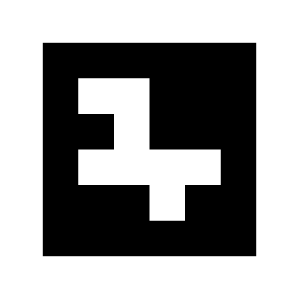
Распечатай его на белой бумаге или покажи на другом экране. Не обрезай белое поле и чёрную рамку. При демонстрации с экрана избегай бликов и слишком маленького размера.
Главные строки генератора:
marker_id = 7
output = 'textbook/assets/aruco_4x4_50_id7.png'
dictionary = cv.aruco.getPredefinedDictionary(cv.aruco.DICT_4X4_50)
marker = cv.aruco.generateImageMarker(dictionary, marker_id, 300)
printable = cv.copyMakeBorder(
marker, 60, 60, 60, 60, cv.BORDER_CONSTANT, value=255
)
cv.imwrite(output, printable)
Здесь 300 — размер стороны в пикселях. Функция copyMakeBorder добавляет по 60 белых пикселей с каждой стороны. Путь output считается от папки CV_course, поэтому запускай программу из неё. Для другого маркера поменяй marker_id на число от 0 до 49 и имя файла в output, чтобы сохранить оба изображения.
2.4. Детектор создаём один раз, ищем в каждом кадре
Перед циклом камеры подготовь словарь и детектор:
dictionary = cv.aruco.getPredefinedDictionary(cv.aruco.DICT_4X4_50)
parameters = cv.aruco.DetectorParameters()
detector = cv.aruco.ArucoDetector(dictionary, parameters)
Внутри цикла, после успешного cap.read(), добавь:
corners, ids, rejected = detector.detectMarkers(frame)
if ids is not None:
cv.aruco.drawDetectedMarkers(frame, corners, ids)
cv.imshow('ArUco', frame)
corners содержит углы распознанных маркеров, ids — их номера. Когда распознанных маркеров нет, ids равно None: это обычный результат, а не ошибка. rejected — кандидаты, не прошедшие проверку; в уроке их не используем. drawDetectedMarkers изменяет переданное изображение, обводит маркеры и подписывает ID. Официальный пример OpenCV.
Готовая программа рисует контур прямо на текущем кадре:
python textbook/examples/05_aruco.py
Поднеси маркер к камере. Ожидаем: контур следует за его четырьмя сторонами, рядом виден номер 7; если убрать маркер, контур исчезает. Не зеркаль кадр перед распознаванием: зеркальная картинка меняет код маркера.
Вот реальный результат запуска того же детектора на подготовленном файле, а не снимок с физической камеры:
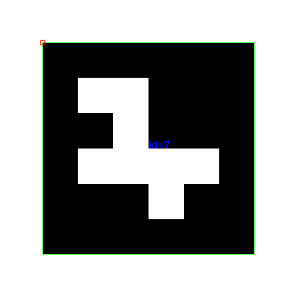
2.5. Самостоятельная практика
Задание, 5 минут. В 06_make_marker.py измени marker_id = 7 на marker_id = 12 и имя файла в output на textbook/assets/aruco_4x4_50_id12.png. Запусти генератор, покажи камере два маркера одновременно и добейся двух контуров с правильными номерами. Затем наклони лист и постепенно отдаляй его: в какой момент распознавание пропадает? Назови два фактора, которые влияют на результат.
Проверка понимания: где создаётся детектор — до цикла или внутри? Почему надо проверять ids is not None? Что случится, если словари генератора и детектора различаются?
Если что-то не работает
| Симптом | Что проверить |
|---|---|
| Камера не открывается | Закрыть видеосвязь и другие приложения с камерой, разрешить доступ для приложения, из которого запущен Python; поменять camera = 0 на camera = 1 в программе. |
| Окно не отвечает | В цикле должен вызываться waitKey(1). Клавиши нажимаются в активном окне видео. |
cv2 не найден |
VS Code и терминал должны использовать одно окружение Python. |
Нет aruco или ArucoDetector |
Проверить python -c "import cv2; print(cv2.__version__); print(cv2.__file__)". Примеры проверены на OpenCV 4.12.0 и в окружении курса с OpenCV 5.0.0. Старые примеры с иным API не смешивать с этим кодом. |
Ошибка imshow, функция не реализована |
Для этих уроков нужна оконная сборка, не headless. |
| Маркер виден, но контура нет | Проверить словарь, белое поле, резкость, свет, размер и отсутствие перекрытия рамки. |
Для единого окружения курса выбран пакет opencv-contrib-python. Это одна поставка cv2; не устанавливай рядом opencv-python, opencv-python-headless или opencv-contrib-python-headless. В современных версиях ArUco может присутствовать и в основной сборке, но смешивать пакеты нельзя: они используют одно имя cv2. Если проверка API проходит, переустановка не нужна. Если обнаружены конфликтующие pip-пакеты, преподаватель поможет удалить дубликаты и оставить одну оконную поставку.
Если OpenCV был установлен через conda, используй отдельное окружение курса по инструкции из начала учебника, чтобы не смешивать менеджеры для одной библиотеки. Правила установки от сопровождающих пакета.
3. Зажигаем светодиод с компьютера
Введём в Python букву r, g или b, а плата зажжёт красный, зелёный или синий светодиод. off выключит все светодиоды. q выключит их и завершит программу.
Собираем схему
В примере используется обычная Raspberry Pi Pico с RP2040 и три отдельных внешних светодиода. У другой платы на RP2040 расположение контактов может отличаться. Встроенный RGB здесь не используется.
Нужны три LED, три резистора 220–330 Ом (на рисунке 330 Ом), провода, макетная плата и USB-кабель с передачей данных. Собирайте схему при отключённом питании. У каждого LED должен быть свой резистор.
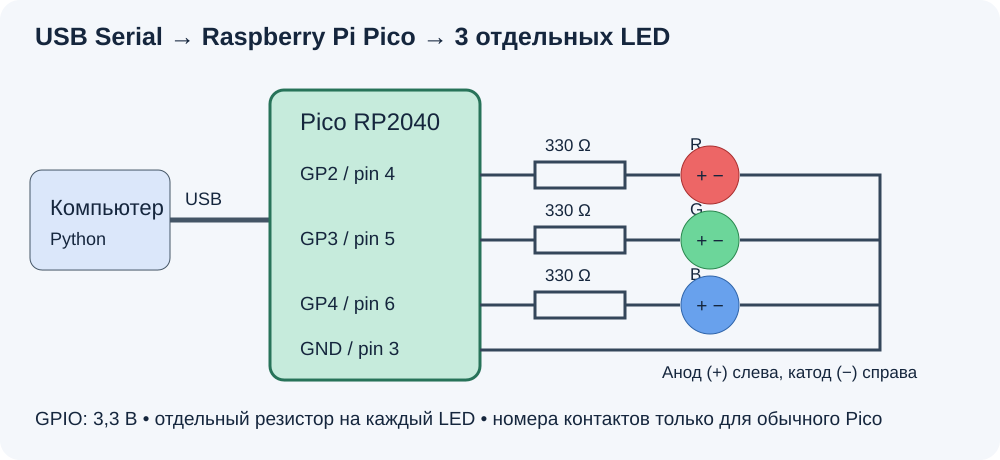
| Цвет | GPIO в программе | Физический контакт обычного Pico | Подключение |
|---|---|---|---|
| Красный | 2 | 4 | GP2 → резистор → анод LED |
| Зелёный | 3 | 5 | GP3 → резистор → анод LED |
| Синий | 4 | 6 | GP4 → резистор → анод LED |
| Общая земля | GND | 3 | Все катоды → GND |
Обычно длинная ножка LED — анод (+), короткая — катод (−). Если ножки обрезаны, проверьте маркировку. Номер GPIO не равен номеру физического контакта. Сверяйтесь с распиновкой Pico. Логика GPIO — 3,3 В; не подавайте на GPIO 5 В.
Схема рассчитана на отдельные LED. RGB с общим анодом требует другого подключения и обратной логики; адресный WS2812 — другой программы. Для урока используем именно три обычных LED.
Загружаем программу Arduino
Используем Arduino framework и пакет плат Arduino-Pico от Earle Philhower. В настройках Arduino IDE добавьте адрес в Additional Boards Manager URLs:
https://github.com/earlephilhower/arduino-pico/releases/download/global/package_rp2040_index.json
Установите пакет плат через Boards Manager и выберите Raspberry Pi Pico (или точную модель своей платы). Оставьте стандартный USB Stack Arduino. Откройте arduino/rgb_serial/rgb_serial.ino из папки учебника.
Для первой загрузки удерживайте BOOTSEL при подключении USB, затем отпустите кнопку. Выберите UF2 Board, если он предлагается в меню порта, и нажмите Upload. После загрузки выберите появившийся последовательный порт. Инструкция Arduino-Pico.
В Arduino нужны две обязательные функции: setup() и loop(). Их вызывает сам framework: setup() один раз после включения, а loop() — снова и снова. Других функций в нашем скетче нет.
void setup() {
pinMode(2, OUTPUT);
pinMode(3, OUTPUT);
pinMode(4, OUTPUT);
digitalWrite(2, LOW);
digitalWrite(3, LOW);
digitalWrite(4, LOW);
Serial.begin(115200);
Serial.setTimeout(100);
}
OUTPUT делает контакт выходом. HIGH включает LED, LOW выключает. Вначале все LED выключены. Serial.begin(115200) запускает связь. setTimeout(100) ограничивает ожидание недостающих символов 100 миллисекундами.
Внутри loop() проверяем, пришли ли данные, и читаем строку:
if (Serial.available() > 0) {
String command = Serial.readStringUntil('\n');
command.trim();
// Дальше сравниваем command с r, g, b и off.
}
\n — конец строки. trim() убирает пробелы и служебные символы по краям. Для красного цвета выполняется такая ветка:
if (command == "r") {
digitalWrite(2, HIGH);
digitalWrite(3, LOW);
digitalWrite(4, LOW);
Serial.println("OK r");
}
Остальные ветки найдите в полном скетче: они явно включают нужный GPIO и выключают два других. Ответ OK r означает, что плата обработала команду. Неизвестная команда получает ответ ERR command.
Проверьте скетч в Serial Monitor: скорость 115200, окончание строки Newline. Отправьте r, затем g, затем off. После проверки закройте Serial Monitor, чтобы Python смог открыть порт.
Пишем Python сверху вниз
Откройте examples/07_serial_led.py. В этом файле нет собственных функций: команды выполняются по порядку.
import time
import serial
from serial.tools import list_ports
for port in list_ports.comports():
print(port.device, port.description)
port_name = input("Введите порт платы: ").strip()
board = serial.Serial(port_name, 115200, timeout=1, write_timeout=2)
time.sleep(2)
Цикл печатает доступные порты. Введите имя порта платы: например, COM5, /dev/cu.usbmodem1101 или /dev/ttyACM0. Это примеры — ваше имя берём из списка. Можно сравнить список до и после подключения платы.
timeout=1 ограничивает чтение одной секундой, write_timeout=2 — ожидание отправки двумя секундами. sleep(2) даёт плате время после открытия порта. Если она запускается дольше, первая команда может остаться без ответа — повторите её после запуска.
Сама отправка занимает одну строку:
board.write((command + "\n").encode("ascii"))
Добавляем конец строки и превращаем текст в байты. Плата читает строку до этого конца. Ответ превращаем обратно в текст:
answer = board.readline().decode("ascii").strip()
if answer:
print(answer)
else:
print("Нет ответа за 1 секунду. Проверьте порт и прошивку.")
Пустой ответ означает, что за отведённое время не получили строку. Это не подтверждение выполнения команды. Чтение и таймауты pySerial.
В while True программа снова и снова спрашивает команду. continue пропускает неправильный ввод, break заканчивает цикл. При q программа отправляет off, читает ответ и выходит. Блок finally выполняет board.close(), даже если возникла ошибка. Для обычного завершения используйте q: закрытие порта само по себе не выключает LED.
Запускаем
В терминале VS Code выберите окружение курса. Если pySerial отсутствует, выполните python -m pip install pyserial. Из папки textbook запустите:
python examples/07_serial_led.py
Ожидаемый диалог (имя порта будет вашим):
Введите порт платы: COM5
r / g / b / off / q: r
OK r
r / g / b / off / q: g
OK g
r / g / b / off / q: b
OK b
r / g / b / off / q: q
OK off
На обеих сторонах стоит 115200. Здесь используется USB Serial, а не отдельный UART-переходник. У выбранного core USB Serial не меняет физическую скорость USB от baudrate; для аппаратного UART Serial1 скорость уже имеет прямое значение. Документация Arduino-Pico Serial.
Проверь себя
- Переключи r → g → b. Предыдущий LED должен гаснуть.
- Введи
off, затем сноваr. Для смены цвета перепрошивка не нужна. - Введи неизвестное слово. Python должен предложить правильные команды.
- Объясни, зачем отправлять
\nи читать ответ платы. - Для консультации: добавь
allв Python и Arduino, чтобы включать все три LED.
Если не получилось
| Что произошло | Что проверить |
|---|---|
Нет модуля serial |
Установлен ли pyserial в выбранном окружении? Не называйте свой файл serial.py. |
| Порта платы нет | USB-кабель передаёт данные? Загружен скетч? Режим BOOTSEL — не обычный serial-порт. |
| Порт занят | Закройте Serial Monitor и другие программы, использующие плату. |
| Нет ответа | Верный порт, актуальная прошивка, плата успела запуститься. |
| Ответ есть, LED не горит | При отключённом питании проверьте полярность, резистор, GPIO и GND. |
Перед занятием преподавателю нужно проверить компиляцию скетча под конкретную плату и переключение физических LED. Программная проверка без платы этого не заменяет.
4. План преподавателя и консультации
Предполагаем пару 90 минут и базовое знакомство учеников с переменными, условиями и циклами. Если Python совсем новый, разберите раздел 0.3 до первой пары и выделите консультацию на циклы. Полное самостоятельное написание всех семи программ с нуля в 180 минут малореалистично: на паре ученики набирают ключевые операции, служебный код получают готовым.
Пара 1 — изображение и поиск объектов
| Минуты | Действие | Проверяемый результат |
|---|---|---|
| 0–10 | Запуск собственного файла, shape, dtype |
Каждый объясняет высоту, ширину, каналы |
| 10–30 | img[y,x], crop, копия, цикл изменения цвета |
Есть обрезка и окрашенное целиком изображение |
| 30–45 | BGR → GRAY, BGR → HSV | Понятны число каналов и диапазоны HSV |
| 45–65 | inRange, просмотр маски, bitwise_and |
На маске белым выделен нужный цвет |
| 65–82 | Контуры, площадь, boundingRect, putText |
Два крупных зелёных объекта обведены и подписаны |
| 82–90 | Изменить порог площади, объяснить ошибки | Ученик объясняет, почему исчезла малая область |
Перед каждой демонстрацией спрашивайте: «Какой результат ожидаем?». После запуска меняйте один параметр. Не объясняйте морфологию подробно до первой работающей маски: очистку шума можно перенести на консультацию.
Пара 2 — камера и плата
| Минуты | Действие | Проверяемый результат |
|---|---|---|
| 0–20 | VideoCapture, read, цикл и выход |
Живой кадр; камера освобождается при выходе |
| 20–38 | Словарь ArUco, маркер, обнаружение и рамка | Видна рамка и ID 7; без оценки позы |
| 38–50 | Схема, готовая прошивка, выбор платы/порта | Плата доступна; схема проверена преподавателем |
| 50–75 | Python: порт, 115200, строки команд и ответы | r, g, b включают ровно один LED |
| 75–85 | off, неизвестная команда, отключённый порт |
Предсказуемое поведение и понятная диагностика |
| 85–90 | Короткая демонстрация каждой команды | Ученик объясняет путь команды до GPIO |
Платы лучше подготовить до второй пары: установить Arduino core, проверить кабели передачи данных и один раз прошить пример. Вторая пара не должна превращаться в массовую установку драйверов. На macOS заранее проверьте разрешение камеры для приложения, из которого запускается Python.
Что подготовить преподавателю
- Рабочее Python-окружение на каждом компьютере, папку учебника и исходное фото.
- Веб-камеру на группу, распечатку
assets/aruco_4x4_50_id7.pngс белым полем. Можно показывать маркер на другом экране, но блики ухудшают обнаружение. - RP2040-плату, USB-кабель с передачей данных, макетную плату, три LED и три резистора, провода. Сверить GPIO с моделью платы; схема в учебнике рассчитана на обычный Raspberry Pi Pico.
- Резервный компьютер и подготовленную прошивку. Если камера недоступна, демонстрируйте
aruco_detected.pngи пример распознавания маркера на фотографии из главы 2; это не заменяет проверку живого потока.
Три контрольных задания
1. «Редактор изображения», 5–7 минут. Вырезать область заданного размера, вывести BGR одного пикселя, циклом усилить красный канал во всём изображении. Критерии: размер crop совпадает с разницей границ; исходник не изменён; значения не переполняются; ученик понимает y,x.
2. «Найди зелёное», 7–10 минут. Построить маску подготовленной сцены, оставить крупные объекты, подписать их. Критерии: два крупных объекта; маленький шум отфильтрован; маска показана отдельно; прямоугольник не назван контуром. Дополнительно показать ID маркера на камере.
3. «Три команды», 5–7 минут. Из Python послать r, g, b, off. Критерии: один LED одновременно, ответ платы соответствует команде, после off все погашены. Ошибочная команда не должна произвольно переключать светодиоды.
Консультации
Первая консультация (30–45 минут, до второй пары): окружения, индексы, границы crop, переполнение uint8, подбор HSV по реальному фото. Не используйте пороги учебной сцены как универсальные пороги для любой камеры.
Вторая консультация (30–45 минут): камера, освещение ArUco, порты и проводка, разбор вопросов. Ускоренное задание со звёздочкой — перенести маску и прямоугольники в видеопоток. Ещё одно — связать найденный цвет с отправкой команды на плату, отправляя только при смене состояния. Это расширение курса, не обязательная часть двух пар.
Опорные вопросы для разбора
- Почему
img[20, 50]— строка 20, столбец 50? - Почему красный пиксель BGR —
(0, 0, 255)? - Чем отличается цветное изображение от бинарной маски?
- Почему сначала смотрим маску, а потом ищем контуры?
- Чем контур отличается от окружающего его прямоугольника?
- Зачем проверять
retи освобождать камеру? - Почему словарь печатного маркера должен совпадать со словарём детектора?
- Зачем перевод строки в Serial-протоколе и ответ
OK?
Методический план дополнительно сверён с Copilot в открытом VS Code. Его замечания об индексах, каналах, проверке маски и формате команд учтены; технические примеры проверяются отдельно.